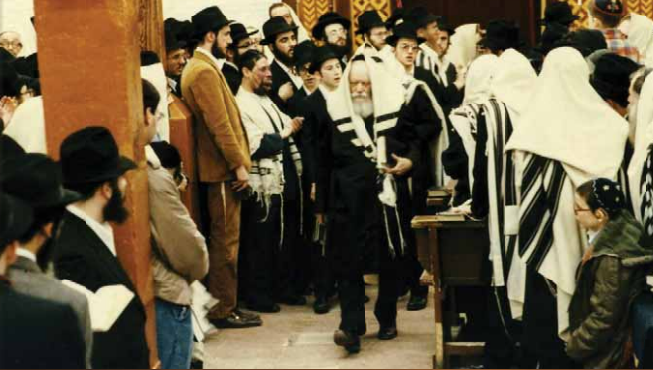

שמעון בן חיים וסוליקה פחימה ע”ה.
איש לא ידע כמה חיבוטי נפש, גוף ונשמה יעבור הרך הנימול שזה עתה ניתן לו שמו, שמעון. כמנהג עדת יהודי מרוקו, נחוג ברית המילה שלו עם כל הפיוטים וצהלולי השמחה, כאשר לאחר מכן ניגשו האורחים והאורחות לברך את אבי הבן ואמו במיטב הברכות והאיחולים. כבר בלילות שקודם ברית המילה, רבתה התכונה, כאשר מדי לילה התכנסו ש

איש לא ידע כמה חיבוטי נפש, גוף ונשמה יעבור הרך הנימול שזה עתה ניתן לו שמו, שמעון. כמנהג עדת יהודי מרוקו, נחוג ברית המילה שלו עם כל הפיוטים וצהלולי השמחה, כאשר לאחר מכן ניגשו האורחים והאורחות לברך את אבי הבן ואמו במיטב הברכות והאיחולים. כבר בלילות שקודם ברית המילה, רבתה התכונה, כאשר מדי לילה התכנסו שכנים וקרובים בבית היולדת וערכו “תחדיד” - קריאת פסוקי תורה כנגד עין–הרע ואמירת פיוטים ומזמורים.
תקווה רבה מילאה את לבם של הורי שמעון פחימה לגדלו לתורה לחופה ולמעשים טובים.
לא ארכו הימים, ושמחת ההורים ובני המשפחה, הפכה לכאב גדול. התברר כי הילד נולד עם סינדרום נדיר שבו כלי הדם מתפוצצים בגופו מבלי שיש יכולת לעצור זאת. ההשלכה הישירה לכך הייתה שפניו היו אדומות ונפוחות בצורה לא רגילה, ואף חצי מגופו נפוח וסמוק. זו מחלה שמתקדמת כל הזמן, וגם ניתוחים לא יכולים לעצרה.
הוריו של שמעון מיהרו לקחתו לרופאים רבים, אך אף אחד מהם לא הצליח לאבחן את המחלה הקשה שפקדה את הילד. שפתיו הלכו והתנפחו ופניו התעוותו עד לבלי הכר. הוא איבד את הראיה בעין אחת, וברבות הימים גם את ראייתו בעין השניה. לא היה גבול ליגונם של ההורים ולסבלו של הילד טהור–הלב.
למרות הקשיים הרבים שחווה שמעון, וההצקות הקשות שחווה מצד חבריו, הוא השתדל להיצמד לדרך אבותיו. היה מלווה את אביו לבית הכנסת ומקשיב ממנו את נוסח התפילה עד שידעו בעל פה. מפי אביו שמע גם את ספר התהלים בנעימה קדושה ורכה, ושמעון בחושיו המחודדים הצליח לקלוט את הספר כולו ואכסנו בראשו כבקופסה. כשגדל יותר, שינן הלכות רבות וידע אותן על בוריין בעל פה. היו גם ממכריו שטענו כי ברכותיו מתקיימות. כל זאת, למרות הסבל התמידי שחווה.
לא רק העיוורון והלקות גרמו לו לצער, אלא הריחוק של בני אדם נוכח מראה פניו שהרתיע אותם. אנשים מיהרו לסובב את ראשם לצדדים ולהסתלק מן המקום במהירות שעה שנכנס למקום כלשהו. היו ילדים שהיו פורצים בבכי למראהו.
בשנת תשכ”ב, בהיותו כבן 18 שנים בערך, עזב את מרוקו ועלה לארץ ישראל, וקבע את מושבו במגדל העמק. כאן ניסה להמשיך את חייו ככל שיכול היה. המסלול החדש בחייו לא היה סוגה בשושנים. קל לתאר שגם פה הוא נאבק לא רק במצבו הבריאותי, אלא גם בסביבה שלא הורגלה לו.
בחודש אלול תשמ”א הגיע בפעם הראשונה לחצרות קדשנו, 770, כדי לשהות במחיצת הרבי. הביקור הקצר הזה הותיר אותו בשכונה במשך כשנתיים ימים, עד שנת תשמ”ג, אז שב לארץ הקודש.
לעתים תכופות היה נכנס ל’בית חיינו’ ומתפלל מנחה וערבית במניין בו התפלל הרבי מלך המשיח.
ב
מנדי דיקשטיין מבאר שבע בן ה–3 שהגיע עם אביו הרה”ח ר’ משה שי’ לחצרות קדשנו, היה מתעורר בלילות כשהוא מסויט, זועק בבהלה “אבא! אבא! השרוף פה?” (כך כינה אותו, על שום מראהו) שעה ארוכה לאחר מכן היה צריך ר’ משה דיקשטיין להרגיע את מנדי בנו, כי הוא נמצא במיטתו הנעימה, וכי האיש לא נמצא.
הפחדים של הילד הגיעו לאחר שפגש את ר’ שמעון פחימה בבית מדרשו של הרבי כאחד המתפללים.
ר’ משה דיקשטיין שראה כי הילד מתקשה להתאושש, ביקש ברכה מהרבי שהטראומה לא תזיק לבנו.
מוסיף ומספר ר’ משה: את תפילות מנחה ומעריב של ימי החול (באותן שנים) התפלל הרבי ב’זאל הקטן’, כשהוא יושב ליד השולחן הסמוך לפתח. בעת שהש”ץ היה חוזר על תפילתו, היינו רגילים לראות את הרבי יושב ליד השולחן, כשהוא תומך את ראשו בידו בתנועה של ריכוז והתבוננות בתוך מילות הסידור.
בשלב מסוים הבחין ר’ משה כי הרבי אינו מניח את ידו כהרגלו מאז ומקדם. הוא התפלא על כך, ורעיון נצנץ במוחו. בטרם שיתף את חבריו במחשבתו, החליט לעקוב מקרוב. ואכן, הצליח לאמת את אשר שיער - בימים שבהם ר’ שמעון פחימה השתתף במניין של הרבי, הקפיד הרבי שלא להניח את ידו על פניו… בפעמים בהן נעדר שמעון מהתפילה - חזר הרבי למנהגו כמאז ומקדם.
במכתב שכתב ר’ משה דיקשטיין באותם ימים לרבי, ביקש ברכה עבור בנו מנדי, שהדבר לא יזיק לנפשו.
כיוון שנגע בעניין זה, הוסיף והעז לציין במכתבו לרבי, כי הוא “יחד עם קבוצת בחורים ואברכים שמנו לבנו כי בחזרת הש”ץ הרבי לא הניח את ידו הק’ על עיניו כמדי יום, והיו מבינינו שאמרו כדי שהאיש לא יחשוב שהוא לא ראוי או ‘מפחיד’”. ר’ משה דיקשטיין הוסיף ושאל, האם אכן יש קשר בין הדברים.
אכן, הייתה זו תעוזה מצד ר’ משה דיקשטיין, אך כך היה המעשה.
כעבור זמן קצר נקרא אל חדר המזכירות כשתשובתו של הרבי ממתינה לו. על בקשת הברכה לבנו - ציין הרבי “אזכיר על הציון”, ועל השערתו לגבי הנהגתו של הרבי בנוכחותו של פחימה, הגיב הרבי בשתי מילים “אהבת ישראל”. בשתי מילים אלו גילה הרבי מלך המשיח את רגישותו האינסופית, שמא אי–מי יחשוב שהוא מכסה את עיניו בעת התפילה כדי שלא להביט ב”שרוף”.
המפליא הוא, שר’ שמעון פחימה עצמו היה עיוור, ובכל זאת הרבי נזהר בכבודו, שמא יבוא אורח לתפילה ויפרש את כיסוי העיניים בצורה לא נכונה.
ג
מדי פעם בפעם היה מגיע לצרפת על מנת לגייס כספים לטיפולים הרפואיים היקרים שלו. מי שזיהה את מצוקתו היו כמה מאנ”ש בצרפת, ובהם ר’ אהרן סיטבון, ר’ יעקב ביטון ועוד כמה מחסידי חב”ד שהתגוררו בפריז. למרות מצבו הקשה של שמעון, הביאו אותו אל ביתם ואירחוהו בצורה מכובדת כמו היה בן בית. הם אף סייעו לו בטיפולים הרפואיים השונים כמו גם בגיוס כספים.
יום אחד התחוללה תפנית בחייו והוא מצא נתיבות חיים חדשים, שממילא לא היו שגרתיים.
אך לשם כך, עלינו להקדים שנים מספר לאחור…
במוסד לעיוורים “מגדלור” (ליד חיפה) בו שהה, הכיר את ר’ שבתאי וישקי, אף הוא עיוור שהתמודד רבות עם עיוורונו. זכה שבתאי ונשא לאישה את ציפורה, אף היא ללא יכולת ראיה. שניהם בנו את ביתם בקרית ‘ישמח משה’ שבגני תקוה.
אם לא די בעיוורונו, הרי ששנה לאחר נישואיו החל שבתאי לחוש שלא בטוב. בדיקות מקיפות העלו כי כליותיו חדלו מלתפקד. הוא החל לעבור טיפולי דיאליזה קשים וציפה לישועת ה’; במקביל החל לחפש תרומת כליה. שבתאי ומשפחתו החלו בחיפושים אחר תורם שיסכים לנדב לו את כלייתו.
רעייתו ציפורה נרתמה אף היא לחיפושים כדי לסייע לבעלה. היא שיתפה בעניין גם את חברתה שושנה, תבלחט”א, נערה שעלתה מארה”ב והתגוררה בסמוך. כיוון ששתיהן היו עולות חדשות, מצאו שפה משותפת והקשר ביניהן היה לקשר בר קיימא.
מששמעה שושנה את הדברים, הציעה את עצמה לבדיקת התאמה עבור כליה לבעל חברתה. היא כבר הספיקה להכירו ולדעת כי מדובר באדם רגיש, ירא שמים מרבים. הדבר היה בעיניה למצוה נעלה לזכות ולסייע לשבתאי. עוד ארוכה הייתה הדרך לפניה, שכן באותן שנים סירבו הרופאים לתרומת כליה שלא מצד בן משפחה, אך לבסוף שוכנעו לסייע. הבדיקות הרבות שנערכו, העלו התאמה גבוהה בין שושנה לשבתאי.
לאחר תקופת ניתוח והחלמה, שב שבתאי לתפקוד שגרתי, כשהוא ממשיך לעסוק בתורה ובגמילות חסדים כפי שנהג מאז ומתמיד.
ד
בין כך ובין כך, שמעון פחימה המשיך בשגרת חייו. הוא לא ויתר על חלומו הגדול למצוא את זיווגו למרות המחלה הקשה ולמרות עיוורונו. באחת הפעמים אף ביקש על כך ברכה מהרבי מה”מ, והרבי נענה ובירכו (על פי עדותו של הרב יעקב ביטון שי’ מצרפת).
שמעון עצמו שמע על סגולה לקרוא את ספר התהלים ליד הכותל המערבי במשך ארבעים יום רצופים. לשם כך עזב את ביתו במגדל העמק ושכר חדר בעיר העתיקה, ומדי יום היה יורד לכותל ושופך את לבו בפרקי תהלים, מילה במילה, במשך שש שעות ארוכות; לא היה זז מעם אבני הכותל בטרם היה מסיים את הספר עד תום.
באחד הימים הזמין שבתאי את חברו שמעון לשבות עמו ועם זוגתו יחד בביתם שבישמח משה. הייתה זו שבת מרוממת שעשו שני החברים, שנים רבות אחרי שנפגשו לאחרונה. השניים שחו בדברי תורה ואגדה על פרשת השבוע, שוררו ניגונים ושירים לכבודה של שבת המלכה והיו בבחינת “כל מקדשי שביעי כראוי לו”.
לאחר שנפרדו מהאורח במוצאי השבת, הציע שבתאי לרעייתו לשדך את שמעון לחברתה הטובה, שושנה.
לא הייתה זו הצעה פשוטה כלל ועיקר, הן בשל המוגבלויות של שמעון והן בשל מצבה הבריאותי של שושנה שהחל להתדרדר מאז תרמה את כלייתה. אם לא די בכך, הרי שהרופאים אף הודיעו לה כי אין לה סיכוי ללדת בעתיד.
למותר לציין כי שבתאי ורעייתו מעולם לא ראו את שמעון ולא ידעו כלל איך באמת הוא נראה…
מששמעה שושנה המלצה כה נלהבת ועל מעלותיו המיוחדות של שמעון, הסכימה להיפגש עמו, למרות מצבו, ולתת צ’אנס לשידוך. היא כבר הספיקה ללמוד כי למוגבלי הראיה יש נשמה רגישה ועדינה.
השידוך קם והיה. שמעון פחימה מצא חן בעיני שושנה טובת–הלב שראתה והתרשמה מלבו הרגיש והחם, ואמרה כי אינה שמה לבה למראהו החיצוני.
לא היה גבול להתרגשותם של כל המשתתפים בחתונה, בני משפחה, שכנים ומכרים, ששמחו ושימחו, וזכו לחמישה קולות, ואף יותר מכך. זו הייתה חתונה מרגשת במיוחד, כאשר הרב יצחק דוד גרוסמן, רבה של מגדל העמק, סידר חופה וקידושין לזוג הטרי.
שמעון עצמו השקיע רבות כדי להקים את ביתו בדרך התורה והמצוות וטרח סביב צרכיה של רעייתו שושנה מתוך מסירות אישית. כאשר שמע את דברי הרופאים כי רעייתו לא תוכל ללדת, התרגש ואמר לה: “לרופא ניתנה רשות לרופא ולא חלילה להיפך. מבטיח אני לך בזכות דוד המלך ובזכות מזמורי התהלים שאני קורא כל יום, שתלדי ללא קושי”.
ואכן, הבטחתו הנרגשת של שמעון התקיימה, וזמן קצר לאחר חתונתם נפקדו בני הזוג, לשמחת לבם של כל בני המשפחה, השכנים והמכרים.
לימים נולד בנם, וברבות השנים אף זכו לנכדים ההולכים בדרך ה’.
שני הזוגות התגוררו בישמח משה, כאשר שמעון ושבתאי היו מתפללים יחד באותו מניין ומנהלים את סדר יומם בנחת ובשגרה.
ה
חלפו שנים, לא כולן היו פשוטות וקלות. שבתאי התמודד שוב עם בעיות בכליה, לצד עיוורונו.
לפני שלוש שנים התדרדר מצבו הבריאותי, ובערב חג השבועות השיב את נשמתו לבוראה בטהרה, לאחר שהזדכך בייסורים קשים. במהלך ההתמודדויות הרפואיות הקשות בהן התמודד, מצא את משוש לבו בדברי תורה, פרפראות וחידושים כפי שנהג כל חייו. גם כששכב על ערש דווי והכרתו מעורפלת, ביקש מאחד ממבקריו לומר דברי תורה, משמחי לב ומשיבי נפש.
ר’ שבתאי ב”ר שמואל נטמן במוצאי חג השבועות ברגבי אדמת בית העלמין ‘סגולה’ שבפתח תקווה, בחלקה של רבנים ונכבדים.
• • •
ערב שבת הגדול תשע”ח.
שמעון פחימה שהה בלוס אנג’לס לרגל עניינים משפחתיים. בשלב מסוים מעד ונפל בגרם מדרגות שבבית מארחיו, וכל גופו נחבט עזות. הוא הובהל לבית הרפואה המקומי כשהוא במצב קשה.
בשבת קודש פרשת אמור (בחו”ל פרשת אחרי מות - קדושים) השיב את נשמתו המיוסרת לבורא עולמים.
שמעון בן חיים וסוליקה פחימה ע”ה.
התגלגלו העניינים לידיו של ידיד המשפחה, ר’ שלמה מילר שי’, ובהשגחה פרטית מופלאה ביקש מאנשי ה’חברא קדישא’ בפתח תקווה ששמעון ייטמן בחלקת המכובדים, סמוך ונראה למקום ידידו הטוב, שבתאי וישקי. הרב מילר, בסיועו של הרב יצחק דוד גרוסמן, דיברו על לבם של אנשי החברא קדישא, אך אלה השיבו כי החלקה המכובדת תפוסה ומלאה עד אפס מקום. “חלקה זו מבוקשת”, הסבירו.
רגע לפני שקבעו את מקומו בחלקה אחרת, פתחו את מפת בית העלמין ובאורח פלא גילו כי יש עוד שני מקומות אחרונים פנויים, סמוך לקברו של שבתאי…
הנאהבים והנעימים, בחייהם ובמותם לא נפרדו.
רעייתו, תבלחט”א, שושנה, הגיבה ואמרה התרגשות: “אני תרמתי לשבתאי כליה והענקתי לו חיים במשך 33 שנים, בתמורה העניק לי הקב”ה חיים עם שמעון למשך 33 שנה”…
יהא סיפור זה לקח ולימוד מאלף עבורנו, לימי ספירת העומר, עד כמה עלינו להיות רגישים זה בכבודו של זה, ולנהוג כבוד ואהבה איש ברעהו.
(תודת הכותב נתונה לשליח הרב יעקב ביטון ולרב שלמה מילר על סיועם להכנת הסיפור)